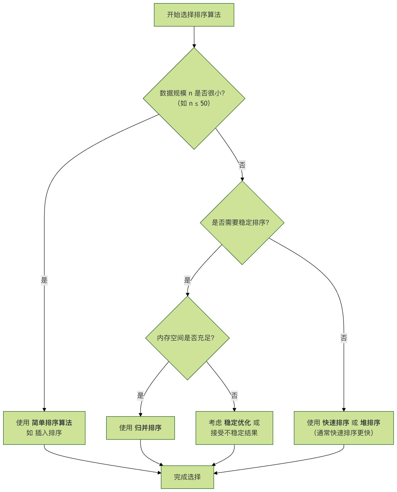

ソートアルゴリズム
ソートアルゴリズム（英語：Sorting algorithm）は、一連のデータを特定の並べ替え方法に従って整列させるアルゴリズムであり、整列後のデータは順序付き配列に格納することができる。
ソートとは、一連のデータ（例えば配列やリスト）を特定の順序（昇順または降順）に従って並べ替えるプロセスのことである。
ソートの基準は通常、データ要素のあるキーコード、例えば数値の大小、文字列の辞書順などである。
ソートはコンピュータサイエンスにおいて最も基本的かつ中核的なアルゴリズム問題の一つである。連絡先の整理、試験結果の分析、データベースのクエリ最適化など、ソートアルゴリズムは至る所で使われている。
異なるソートアルゴリズムを理解することは、実際の問題を解決するのに役立つだけでなく、アルゴリズムの設計と分析の考え方を深く理解するための絶好の道でもある。
ソートアルゴリズムの分類
ソートアルゴリズムは複数の観点から分類できる。最も一般的な分類方法は、その時間計算量と空間計算量。
| 分類の観点 | カテゴリ | 説明 | 代表的なアルゴリズム |
|---|---|---|---|
| 時間計算量 | O(n²) 級 | シンプルで直感的だが、効率は低く、小規模データに適している。 | バブルソート、選択ソート、挿入ソート |
| O(n log n) 級 | 効率が高く、大規模データを扱う際の第一の選択肢である。 | クイックソート、マージソート、ヒープソート | |
| 空間計算量 | インプレースソート | ソート処理中に定数レベルの追加スペースのみを使用する。 | バブル、選択、挿入、シェル、ヒープソート、クイックソート |
| 非インプレースソート | ソート処理中にデータ規模に相当する追加スペースを必要とする。 | マージソート、計数ソート、バケットソート、基数ソート | |
| 安定性 | 安定ソート | 等しい要素の相対的な順序はソート後も保持される。 | バブル、挿入、マージ、計数、バケット、基数ソート |
| 不安定ソート | 等しい要素の相対的な順序はソート後に変わる可能性がある。 | 選択、シェル、ヒープ、クイックソート |
重要な概念の説明：
- 時間計算量：アルゴリズムの実行時間がデータ量の増加に伴ってどのように変化する傾向かを示す指標。
- 空間計算量：アルゴリズムの実行中に必要な追加の記憶領域の大きさを示す指標。
- 安定性：値が等しい要素について、ソート後にそれらの前後関係が保持されるかどうか。これは複数キーによるソートの際に非常に重要である。
以下のフローチャートは、さまざまな要件に応じて、いくつかの古典的なアルゴリズムの中から初期選択を行う方法を示している。

O(n²) 級の基本ソートアルゴリズム
この種のアルゴリズムは考え方がシンプルで、ソートのロジックを理解する出発点となる。
バブルソート
核心となる考え方：ソート対象のシーケンスを繰り返し「走査」し、一度に2つの隣接要素を比較して、順序が間違っていれば交換する。各走査で、現在の未ソート部分の最大（または最小）要素が正しい位置にバブルアップされる。
アルゴリズムの手順：
- 隣接する要素を比較する。最初の要素が2番目の要素より大きい場合（昇順）、それらを交換する。
- 隣接するすべての要素のペアに対して同じ操作を行う。最初のペアから最後のペアまで。このステップが終わると、最後の要素が最大の数になる。
- 最後の要素を除くすべての要素に対して上記の手順を繰り返す（各ラウンドで最終的な要素が1つ確定するため）。
- 比較する必要のある数字のペアがなくなるまで、毎回要素を減らしながら上記の手順を繰り返す。
コード実装：
例
"""
バブルソート (昇順)
:param arr: ソート対象のリスト
"""
n = len(arr)
# 外側のループは実行するラウンド数を制御する (n-1 ラウンド)
for i in range(n - 1):
# 内側のループで隣接要素の比較と交換を行う
# 各ラウンド終了後、最後の i+1 個の要素は整列済みなので、比較範囲は 0 から n-1-i まで
for j in range(0, n - 1 - i):
if arr[j] > arr[j + 1]: # 前の要素が後ろの要素より大きい場合
# 2つの要素の位置を交換する
arr[j], arr[j + 1] = arr[j + 1], arr[j]
return arr
# テストデータ
test_data = [64, 34, 25, 12, 22, 11, 90]
print("元の配列:", test_data)
sorted_data = bubble_sort(test_data.copy()) # コピーを使用して元データを変更しないようにする
print("バブルソート後:", sorted_data)
出力：
原始数组: [64, 34, 25, 12, 22, 11, 90] 冒泡排序后: [11, 12, 22, 25, 34, 64, 90]
性能分析：
- 時間計算量：最良の場合 O(n)（既に整列済みの場合は最適化により実現可能）、最悪および平均の場合は O(n²)。
- 空間計算量：O(1) であり、インプレースソートである。
- 安定性：安定。
選択ソート
核心となる考え方：未ソートのシーケンスから最小（または最大）の要素を見つけて、ソート済みシーケンスの先頭に配置する。その後、残りの未ソート要素から再び最小（最大）の要素を探し、ソート済みシーケンスの末尾に配置する。これをすべての要素がソートされるまで繰り返す。
アルゴリズムの手順：
- 初期状態：シーケンス全体が未ソート領域である。
- i ラウンド目（i は 0 から始まる）のソート時、現在の未ソート領域は
arr[i...n-1]。この領域からキーが最小のレコードを選び出す。arr[min_index]。 - 将
arr[min_index]未ソート領域の最初のレコードとarr[i]交換する。これにより、arr[0...i]ソート済み領域が形成される。 - n-1 ラウンド終了後、配列のソートが完了する。
コード実装：
例
"""
選択ソート (昇順)
:param arr: ソート対象のリスト
"""
n = len(arr)
for i in range(n):
# 現在のインデックス i の要素が最小であると仮定する
min_index = i
# i+1 から n-1 の範囲でより小さい要素を探す
for j in range(i + 1, n):
if arr[j] < arr[min_index]:
min_index = j # 最小要素のインデックスを更新する
# 見つかった最小要素と位置 i の要素を交換する
arr[i], arr[min_index] = arr[min_index], arr[i]
return arr
# テスト
test_data = [64, 25, 12, 22, 11]
print("元の配列:", test_data)
print("選択ソート後:", selection_sort(test_data.copy()))
出力：
原始数组: [64, 25, 12, 22, 11] 选择排序后: [11, 12, 22, 25, 64]
性能分析：
- 時間計算量：データの順序に関係なく完全な比較が必要なため、常に O(n²) である。
- 空間計算量：O(1) であり、インプレースソート。
- 安定性：不安定。例えばシーケンス
[5, 8, 5, 2, 9]、最初のラウンドで最初の5と2を交換し、2つの5の元の順序を壊す。
挿入ソート
核心となる考え方：ソート済みシーケンスを構築し、未ソートのデータについて、ソート済みシーケンスを後ろから前に向かって走査し、適切な位置を見つけて挿入する。これはトランプを整理するのと同じようなものである。
アルゴリズムの手順：
- 最初の要素をソート済みシーケンスとみなす。
- 次の要素を取り出し、ソート済みの要素シーケンスを後ろから前に向かって走査する。
- その要素（ソート済み）が新しい要素より大きい場合、その要素を次の位置に移動する。
- ソート済みの要素が新しい要素以下になる位置を見つけるまで、手順 3 を繰り返す。
- 新しい要素をその位置に挿入する。
- すべての要素が処理されるまで、手順 2〜5 を繰り返す。
コード実装：
例
"""
挿入ソート (昇順)
:param arr: ソート対象のリスト
"""
n = len(arr)
# 2番目の要素から開始する（インデックス1）。最初の要素はデフォルトでソート済みのため
for i in range(1, n):
key = arr[i] # 現在挿入対象の要素
j = i - 1 # ソート済みシーケンスの最後の要素のインデックス
# ソート済みシーケンスを後ろから前に走査し、key の挿入位置を探す
# 同時に key より大きい要素を1つ後ろに移動する
while j >= 0 and key < arr[j]:
arr[j + 1] = arr[j]
j -= 1
# key を見つけた正しい位置に挿入する
arr[j + 1] = key
return arr
# テスト
test_data = [12, 11, 13, 5, 6]
print("元の配列:", test_data)
print("挿入ソート後:", insertion_sort(test_data.copy()))
出力：
原始数组: [12, 11, 13, 5, 6] 插入排序后: [5, 6, 11, 12, 13]
性能分析：
- 時間計算量：最良の場合 O(n)（既に整列済み）、最悪および平均の場合は O(n²)。
- 空間計算量：O(1)、インプレースソート。
- 安定性：安定。
- 特徴：小規模またはほぼ整列済みのデータに対して、挿入ソートは非常に効率的です。これは、高度なソートアルゴリズム（Timsortなど）が小規模データで切り替えて使用するアルゴリズムです。
O(n log n) 級の高効率ソートアルゴリズム
データ量が大きくなると、O(n²) のアルゴリズムは非常に遅くなります。以下に示すより効率的なアルゴリズムは、実務における主力です。
クイックソート
核となる考え方：分割統治法。ベースとなる要素（ピボット）を選択し、1回のソートで対象のレコードを独立した2つの部分に分割します。一方の部分のレコードのキーはすべて他方の部分のキーよりも小さくなります。その後、この2つの部分に対して再帰的にソートを続けることで、シーケンス全体を整列させます。
アルゴリズムの手順：
- ピボットの選択：数列から1つの要素を選び、これを「ピボット」と呼びます。
- パーティション操作：数列を並べ替え、ピボット値より小さい要素はすべてピボットの前に、ピボット値より大きい要素はすべてピボットの後ろに置きます（同じ値はどちら側でもかまいません）。このパーティション操作が終了すると、ピボットは数列の中央の位置にあります。これをパーティション操作と呼びます。
- 再帰的ソート：ピボット値より小さい要素の部分数列と、ピボット値より大きい要素の部分数列を再帰的にソートします。
コード実装：
例
"""
クイックソート（昇順）- メイン関数
"""
def _quick_sort(arr, low, high):
if low < high:
# pi はパーティションのインデックスで、arr[pi] は現在正しい位置にあります
pi = partition(arr, low, high)
# パーティションの前後の部分配列を再帰的にソート
_quick_sort(arr, low, pi - 1)
_quick_sort(arr, pi + 1, high)
def partition(arr, low, high):
"""
パーティション関数。最後の要素をピボットとして選択します
:return: ピボット要素の最終的な正しい位置のインデックス
"""
pivot = arr[high] # ピボットを選択
i = low - 1 # ピボットより小さい部分配列の末尾を指す
for j in range(low, high):
# 現在の要素がピボット以下の場合
if arr[j] <= pivot:
i += 1
arr[i], arr[j] = arr[j], arr[i] # 交換
# ピボット要素を正しい位置（i+1）に配置
arr[i + 1], arr[high] = arr[high], arr[i + 1]
return i + 1
_quick_sort(arr, 0, len(arr) - 1)
return arr
# テスト
test_data = [10, 80, 30, 90, 40, 50, 70]
print("元の配列:", test_data)
print("クイックソート後:", quick_sort(test_data.copy()))
出力：
原始数组: [10, 80, 30, 90, 40, 50, 70] 快速排序后: [10, 30, 40, 50, 70, 80, 90]
性能分析：
- 時間計算量：平均は O(n log n)、最悪は O(n²)（配列が昇順または降順に整列済みで、ピボットの選択が不適切な場合）。ピボットをランダムに選ぶか「三数中央値」法を使うことで、最悪ケースを大幅に回避できます。
- 空間計算量：平均 O(log n)（再帰呼び出しスタック）、最悪 O(n)。
- 安定性：不安定。
マージソート
核となる考え方：分割統治法の典型的な応用です。既に整列済みの部分列をマージして、完全に整列した列を得ます。つまり、まず各部分列を整列させ、次に部分列間を整列させます。
アルゴリズムの手順：
- 分割：現在の区間を2つに分けます。つまり分割点を求めます
mid = (low + high)/2。 - 解決：2つの部分区間に対して再帰的に
arr[low...mid]とarr[mid+1...high]マージソートを行います。再帰の終了条件は、部分区間の長さが1になることです（1つの要素は自然に整列していると見なします）。 - マージ（統合）：整列済みの2つの部分区間を1つの整列した区間にマージします。
コード実装：
例
"""
マージソート（昇順）- メイン関数
"""
if len(arr) > 1:
mid = len(arr) // 2 # 中間点を見つけて配列を分割
left_half = arr[:mid]
right_half = arr[mid:]
# 左右半分を再帰的にソート
merge_sort(left_half)
merge_sort(right_half)
# 整列済みの2つの部分配列をマージ
i = j = k = 0
# 左右の部分配列の要素を比較し、小さい方を元の配列に入れる
while i < len(left_half) and j < len(right_half):
if left_half[i] < right_half[j]:
arr[k] = left_half[i]
i += 1
else:
arr[k] = right_half[j]
j += 1
k += 1
# 残りの要素があるか確認（左半分または右半分）
while i < len(left_half):
arr[k] = left_half[i]
i += 1
k += 1
while j < len(right_half):
arr[k] = right_half[j]
j += 1
k += 1
return arr
# テスト
test_data = [38, 27, 43, 3, 9, 82, 10]
print("元の配列:", test_data)
print("マージソート後:", merge_sort(test_data.copy()))
出力：
原始数组: [38, 27, 43, 3, 9, 82, 10] 归并排序后: [3, 9, 10, 27, 38, 43, 82]
性能分析：
- 時間計算量：最良、最悪、平均のいずれの場合も O(n log n) です。性能は非常に安定しています。
- 空間計算量：O(n)。元の配列と同じ大きさの追加スペースが必要です（マージのため）。
- 安定性：安定。
ヒープソート
核となる考え方：利用します。堆このデータ構造を用いて設計されたソートアルゴリズムです。ヒープはほぼ完全二分木の構造であり、ヒープの性質を満たします。つまり、親ノードの値は常に子ノードの値以上（最大ヒープ）または以下（最小ヒープ）になります。
アルゴリズムの手順：
- 最大ヒープの構築：ソート対象の列を最大ヒープに構築します。このとき、列全体の最大値はヒープの先頭（ルートノード）になります。
- ヒープの先頭と末尾の要素を交換：ヒープの先頭要素（最大値）を末尾要素と交換します。このとき、末尾要素が最大値になります。
- ヒープ構造の調整：残りの
n-1個の要素を再び最大ヒープに構築し、これにより次に大きい値が得られます。それを新しい末尾（n-1の位置）と交換します。 - 繰り返す手順2と3を、ヒープのサイズが1になるまで繰り返し、ソート完了です。
コード実装：
例
"""
ヒープソート（昇順）- 最大ヒープを使用
"""
n = len(arr)
# 手順1：最大ヒープを構築。最後の非葉ノードから上に向かって調整
# 最後の非葉ノードのインデックス = n//2 - 1
for i in range(n // 2 - 1, -1, -1):
heapify(arr, n, i)
# 手順2 & 3：ヒープの先頭要素（最大値）を1つずつ取り出し、ヒープを調整
for i in range(n - 1, 0, -1):
# 現在のヒープ先頭（最大値）を末尾要素と交換
arr[i], arr[0] = arr[0], arr[i]
# 残りの要素を再び最大ヒープになるように調整。ヒープサイズは i になる
heapify(arr, i, 0)
return arr
def heapify(arr, n, i):
"""
i を根とする部分木が最大ヒープになるように調整します
:param arr: ヒープ配列
:param n: ヒープの現在のサイズ
:param i: 現在のルートノードのインデックス
"""
largest = i # 最大値をルートに初期化
left = 2 * i + 1 # 左の子ノードのインデックス
right = 2 * i + 2 # 右の子ノードのインデックス
# 左の子ノードが存在し、ルートより大きい場合
if left < n and arr[left] > arr[largest]:
largest = left
# 右の子ノードが存在し、現在の最大値より大きい場合
if right < n and arr[right] > arr[largest]:
largest = right
最大値がルートでない場合、交換し、壊れた部分ヒープを再帰のに調整
if largest != i:
arr[i], arr[largest] = arr[largest], arr[i]
heapify(arr, n, largest)
# テスト
test_data = [4, 10, 3, 5, 1]
print("元の配列:", test_data)
print("ヒープソート後:", heap_sort(test_data.copy()))
出力：
原始数组: [4, 10, 3, 5, 1] 堆排序后: [1, 3, 4, 5, 10]
性能分析：
- 時間計算量：最良、最悪、平均のいずれの場合も O(n log n) です。
- 空間計算量：O(1)、インプレースソート。
- 安定性：不安定。
アルゴリズム性能比較のまとめ
上記のアルゴリズムの特性をより直感的に比較するために、以下の表にまとめます：
| アルゴリズム | 平均時間計算量 | 最悪時間計算量 | 空間計算量 | 安定性 | 主な特徴 |
|---|---|---|---|---|---|
| バブルソート | O(n²) | O(n²) | O(1) | 安定 | シンプルで効率は低いが、教育に適している。 |
| 選択ソート | O(n²) | O(n²) | O(1) | 不安定 | 交換回数は少ないが、比較回数は固定で多い。 |
| 挿入ソート | O(n²) | O(n²) | O(1) | 安定 | 小規模またはほぼ整列済みのデータに効率的。 |
| クイックソート | O(n log n) | O(n²) | O(log n) | 不安定 | 平均性能が最も良い、最も広く応用されているソートアルゴリズムです。 |
| マージソート | O(n log n) | O(n log n) | O(n) | 安定 | 性能は安定しているが、追加スペースが必要。外部ソートでよく使われます。 |
| ヒープソート | O(n log n) | O(n log n) | O(1) | 不安定 | インプレースソートで、最悪の場合も O(n log n) です。 |
実践演習
理論学習の後、実際に手を動かすことは知識を定着させる最良の方法です。
演習 1：アルゴリズムの選択と実装
以下のシナリオが与えられたとき、どのソートアルゴリズムを選びますか？その理由も簡潔に説明してください。
- 10個の数値を含む配列をソートする。
- 100万個の学生オブジェクトを含む連結リストを学籍番号でソートする。安定性が要求される。
- メモリが限られた組み込みシステムで、大きな配列をソートする。
- データストリームから上位K個の最大要素をリアルタイムに取得する必要がある。
参考解答の考え方：
- 挿入ソート。データ規模が小さく、挿入ソートはシンプルでほぼ整列済みのデータに適しており、定数因子が小さい。
- マージソート。データ規模が大きく、安定ソートが要求され、連結リスト構造によりマージソートのマージ操作が O(1) 空間で完了できる（ポインタを修正するだけでよい）。
- ヒープソート。メモリが限られており、インプレースソートが必要。ヒープソートは最悪の場合でも O(n log n) の性能を保証する。
- サイズ K の最小ヒープを維持する。データストリームを走査し、ヒープを使って現在の最大K個の要素を維持します。これは完全なソートではありませんが、ヒープの特性を利用しています。
演習 2：コードのデバッグと最適化
以下のバブルソートには小さなバグと最適化できる箇所が1つあります。それを見つけて修正してください。
例
n = len(arr)
for i in range(n):
for j in range(n - 1):
if arr[j] > arr[j]:
arr[j], arr[j+1] = arr[j+1], arr[j]
return arr
ヒント：
- 比較条件
arr[j] > arr[j]常に偽になる。 - 内側のループの境界は最適化できます。各ラウンドの後、末尾の要素はすでに整列しているためです。
演習 3：実際に実装してみよう
ゼロから自分で実装してみてくださいクイックソート、そして考えてみましょう：
- もしピボットが
pivot常に最初の要素を選ぶ場合、ソート済みの配列をソートするとどうなるでしょうか？ - どのように修正すればよいでしょうか
partition関数を「三方向クイックソート」に変更して、多くの重複要素を含む配列をより効率的に処理できるようにするには？